Overview
ggchord is an R package built on ggplot2 that visualizes multi-sequence alignment results as intuitive chord diagrams using layered grammar of graphics. Version 0.4.0 moved layout parameters from ggchord() into individual geom_* layers, aligning closely with ggplot2’s design philosophy — each layer manages its own style. v0.5.0 removed the ggnewscale/RColorBrewer dependencies and added ribbon outline customization. The latest v0.6.0 release makes plot objects fully self-contained (layout is computed at build time), adds ggsave()/ggplot_build() support, strengthens data validation, and adds CI.
- Each sequence is presented as an arc with length proportionally mapped.
- Colored ribbons represent alignment regions between sequences, supporting coloring by similarity or source.
- Gene annotations are overlaid as arrows, colorable by strand direction or functional category.
- Customizable axes provide precise annotation of sequence positions and lengths.
- Layout parameters can be distributed across the corresponding
geom_*layers, or omitted to use sensible defaults.
Suitable for comparative genomics, pan-genome analysis, phage-host sequence relationship studies, and more.
Key Features
-
Genuine
ggplot2Layered Style:ggchord()only takes data and global parameters; eachgeom_*receives its own layout parameters, just likeggplot2. -
Deferred Computation Model: Layout is computed when the plot is built (via
print(),ggsave(), orggplot_build()), so parameters specified acrossgeoms are all collected and applied during rendering. - Multi-sequence Support: Display alignment relationships of two or more sequences simultaneously.
-
Sequence-level Customization: Order, orientation, gaps, radius, and curvature — parameters belong in
geom_seq(). -
Flexible Ribbon Styles: 3 coloring schemes, Bézier control points — parameters belong in
geom_ribbon(). -
Gene Arrow Layer: Color by strand or annotation category, with labels — parameters belong in
geom_gene(). -
Refined Axes: Major/minor ticks, label size and orientation — parameters belong in
geom_axis(). -
Sequence Labels: Labels can be placed on/outside each sequence arc via
geom_seq_label(). -
Flexible Integration: Plot objects are self-contained and work with
ggsave(),ggplot_build()andggplotly(); themes and scales can be added with+.
Installation
Installing ggchord
From CRAN:
install.packages("ggchord")From GitHub:
devtools::install_github("DangJem/ggchord")Quick Start
Build Your First Chord Diagram
The package ships with example datasets, so you can run the code below as-is:
library(ggchord)
# Load the built-in example datasets
data(seq_data_example)
data(ribbon_data_example)
data(gene_data_example)
# Build a chord diagram by stacking ggplot2-style layers
p <- ggchord(
seq_data = seq_data_example,
ribbon_data = ribbon_data_example,
gene_data = gene_data_example
) +
geom_seq() + # sequence arcs
geom_ribbon() + # alignment ribbons
geom_gene() + # gene annotations
geom_axis() # position axes
print(p)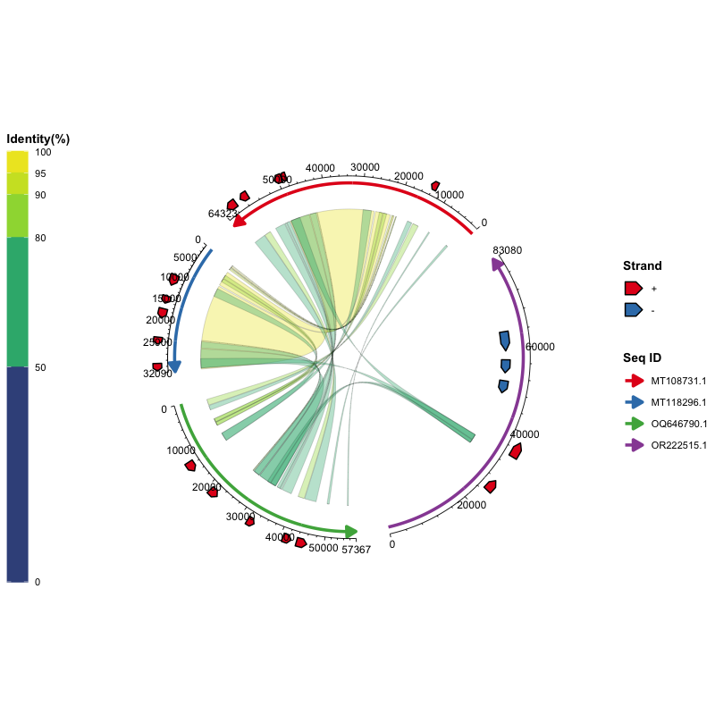
ggchord() only takes the data and global options; every geom_* layer has sensible defaults, so the plot above needs no parameters at all. To learn how to customize each layer, follow the step-by-step examples below.
Usage Instructions
Data Preparation
Three types of input data are expected:
[Required] Sequence Data (seq_data)
A data frame describing the sequences to draw. It must contain the following columns:
| Column | Type | Description |
|---|---|---|
seq_id |
character | Unique sequence identifier |
length |
integer | Sequence length (positive) |
Example:
seq_data <- read.delim("seq_track.tsv", sep = "\t", stringsAsFactors = FALSE)Where seq_track.tsv looks like:
| seq_id | length |
|---|---|
| MT108731.1 | 64323 |
| MT118296.1 | 32090 |
| OQ646790.1 | 57367 |
| OR222515.1 | 83080 |
Auto-generate from FASTA files:
[Optional] Alignment Data (ribbon_data)
A data frame with one row per pairwise alignment block between two sequences. It must contain the following columns (named after common alignment-tool output conventions, e.g., BLAST):
| Column | Type | Description |
|---|---|---|
qaccver |
character | Query sequence ID |
saccver |
character | Subject sequence ID |
length |
integer | Alignment length (bp) |
pident |
numeric | Percent identity (0-100) |
qstart |
integer | Start position on the query sequence |
qend |
integer | End position on the query sequence |
sstart |
integer | Start position on the subject sequence |
send |
integer | End position on the subject sequence |
Example rows:
| qaccver | saccver | length | pident | qstart | qend | sstart | send |
|---|---|---|---|---|---|---|---|
| MT108731.1 | MT118296.1 | 24856 | 98.612 | 26298 | 51139 | 7121 | 31959 |
| MT108731.1 | MT118296.1 | 4412 | 97.031 | 21513 | 25922 | 2365 | 6772 |
| MT108731.1 | MT118296.1 | 464 | 94.181 | 20691 | 21146 | 1032 | 1495 |
For example, the output of a batch BLAST run can be parsed into this table directly:
seqs=("MT108731.1" "MT118296.1" "OQ646790.1" "OR222515.1")
ext="fna"
for ((i=0; i<${#seqs[@]}-1; i++)); do
for ((j=i+1; j<${#seqs[@]}; j++)); do
blastn \
-outfmt '7 qaccver saccver pident length mismatch gapopen qstart qend sstart send evalue bitscore qcovs qlen slen sstrand stitle' \
-query "${seqs[$i]}.${ext}" \
-subject "${seqs[$j]}.${ext}" \
-out "${seqs[$i]}__${seqs[$j]}.o7"
done
done[Optional] Gene Data (gene_data)
A data frame annotating genes (or other features) on the sequences. It must contain the following columns:
| Column | Type | Description |
|---|---|---|
seq_id |
character | Sequence ID the gene belongs to |
start |
integer | Gene start position |
end |
integer | Gene end position |
strand |
character | Strand direction (+ or -) |
anno |
character | Gene annotation / functional category |
Example rows:
| seq_id | start | end | strand | anno |
|---|---|---|---|---|
| MT108731.1 | 60709 | 63087 | + | hypothetical protein |
| MT118296.1 | 14628 | 16301 | + | virion structural protein |
| OQ646790.1 | 43765 | 46140 | + | integrase |
| OQ646790.1 | 13194 | 15551 | + | tail tape measure protein |
For example, this table can be converted from a GFF3 file:
library(tidyverse)
gff3FilesPath <- list.files(path = ".", pattern = "*.gff3")
gff3Table <- map_df(gff3FilesPath, ~read_tsv(.x, show_col_types = F, comment = "#",
col_names = F) %>% set_names(c("seq_id", "source", "type", "start", "end",
"score", "strand", "phase", "attributes")))
geneTrackTable <- gff3Table %>%
filter(type == "CDS") %>%
mutate(anno = str_extract(attributes, "(?<=product=)[^;]+(?=;)")) %>%
select(seq_id, start, end, strand, anno)
write_tsv(geneTrackTable, "gene_track.tsv")Usage Examples
All examples below use the built-in datasets, so you can run them directly:
If you want to use your own data, see Data Preparation above for the required formats and how to read them from common file types.
Step 1: Draw the Sequence Arcs
The simplest plot needs only seq_data — each sequence is drawn as a colored arc whose length is proportional to the sequence length:
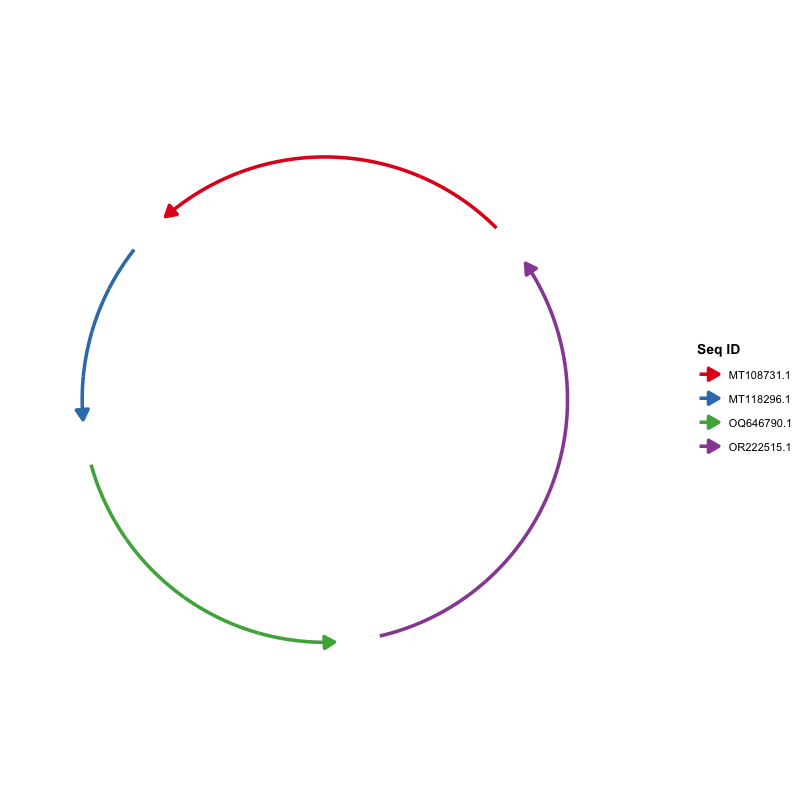
Customize the sequence layout — order, orientation, curvature, and colors all belong to geom_seq():
ggchord(seq_data = seq_data_example) +
geom_seq(
seq_order = c("MT118296.1", "OR222515.1", "MT108731.1", "OQ646790.1"),
seq_orientation = c(1, -1, 1, -1),
seq_curvature = c(0, 2, -2, 6),
seq_colors = c("steelblue", "orange", "pink", "yellow")
)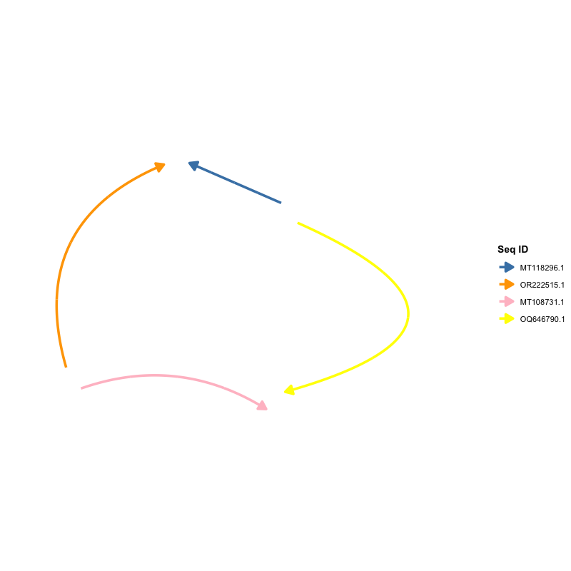
Step 2: Add Alignment Ribbons
Add ribbon_data and draw ribbons between the sequences. By default ribbons are colored by percent identity (pident, the "pident" scheme):
ggchord(seq_data_example, ribbon_data_example) +
geom_seq() + geom_ribbon()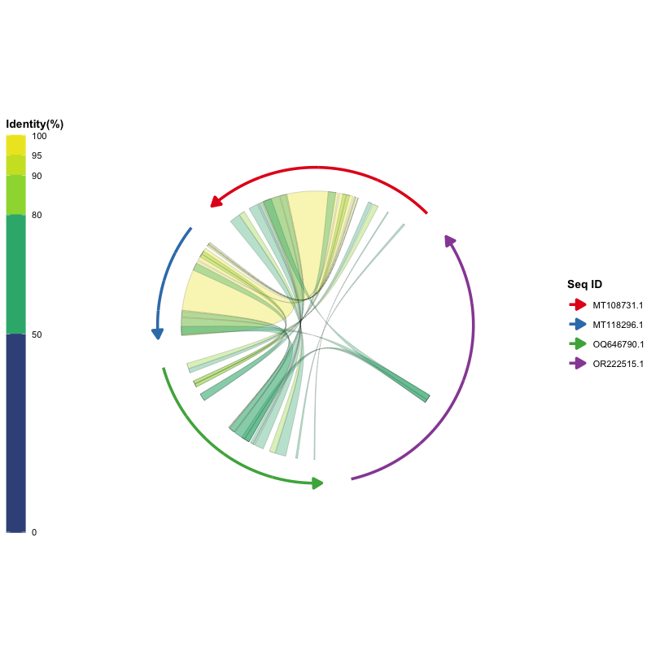
Other ribbon color schemes are available:
# Color ribbons by the query sequence
ggchord(seq_data_example, ribbon_data_example) +
geom_seq() + geom_ribbon(ribbon_color_scheme = "query")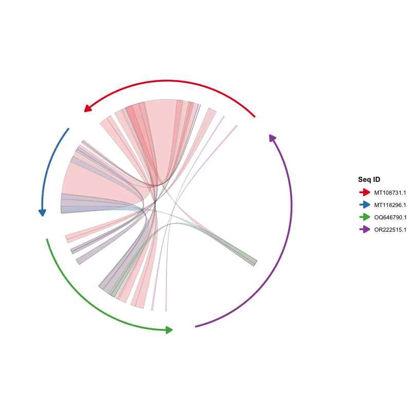
# Color ribbons by the subject sequence
ggchord(seq_data_example, ribbon_data_example) +
geom_seq() + geom_ribbon(ribbon_color_scheme = "subject")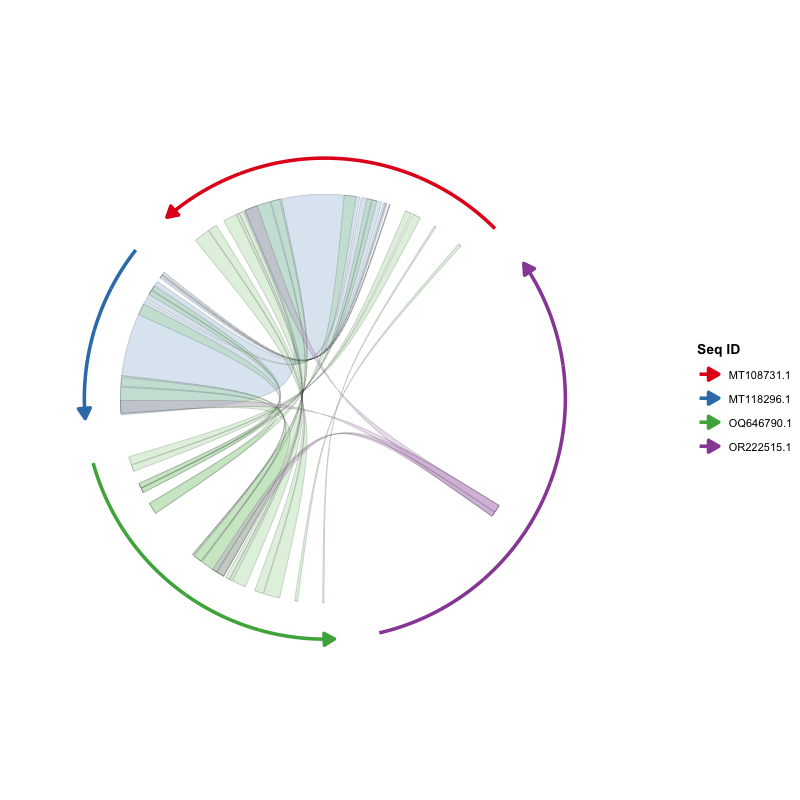
# Use a single color for all ribbons
ggchord(seq_data_example, ribbon_data_example) +
geom_seq() +
geom_ribbon(ribbon_color_scheme = "single", ribbon_colors = "orange")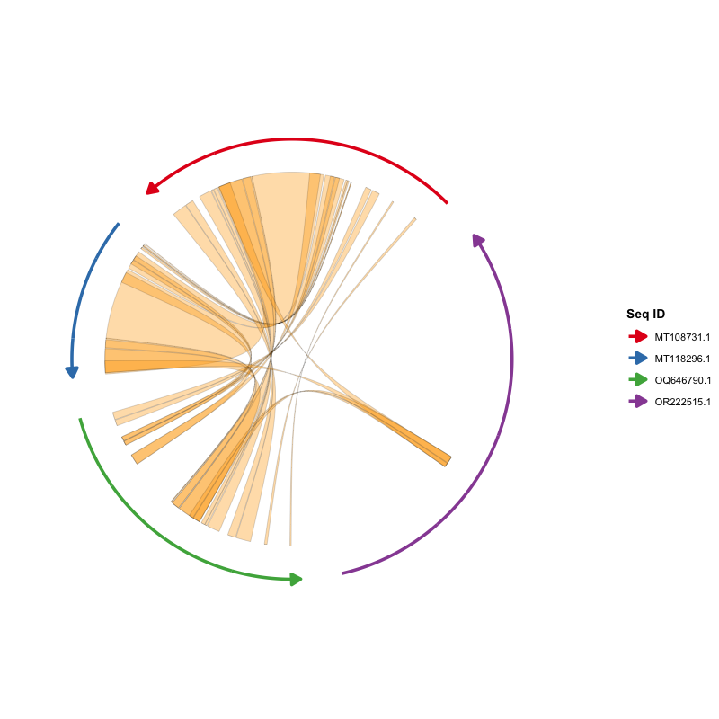
Step 3: Add Gene Annotations
Add gene_data and draw genes as arrow polygons. By default arrows are colored by strand (+ / -):
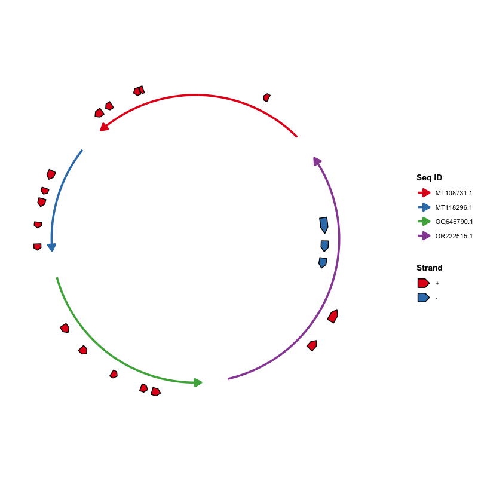
Color by annotation category and show gene labels:
ggchord(seq_data_example, gene_data = gene_data_example) +
geom_seq() +
geom_gene(
gene_color_scheme = "manual",
gene_label_show = TRUE,
gene_label_rotation = 45,
gene_label_radial_offset = 0.1
)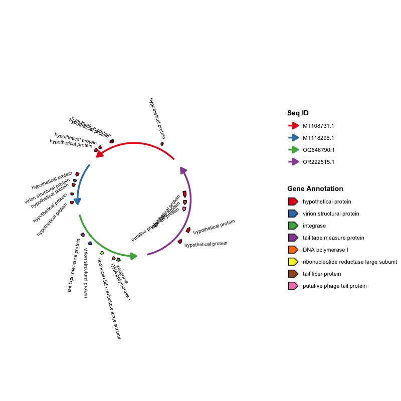
Step 4: Add Axes and Sequence Labels
Axes annotate sequence positions with major/minor ticks, and geom_seq_label() places labels on or outside the arcs:
ggchord(seq_data_example) +
geom_seq() +
geom_axis(
axis_tick_major_length = 0.03,
axis_tick_minor_length = 0.015,
axis_label_size = 2.5
) +
geom_seq_label(seq_label_radius = 1.2)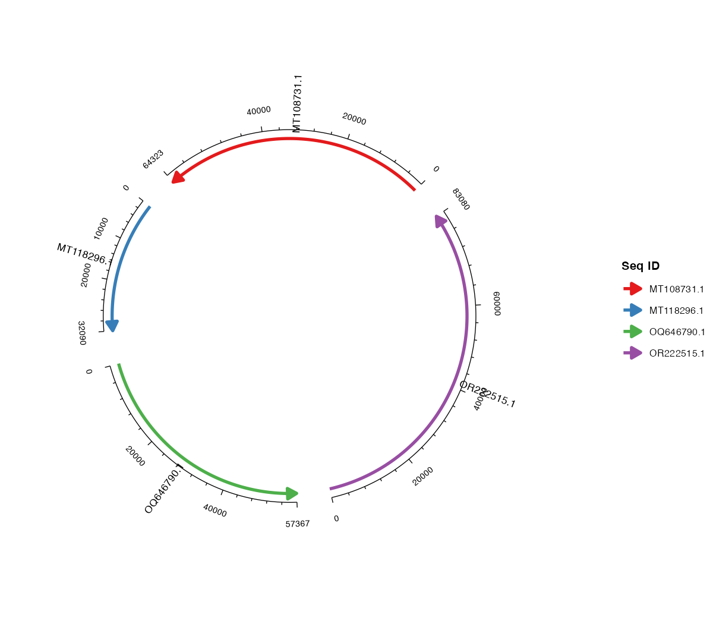
Step 5: Two-Sequence Comparison
The built-in datasets contain four sequences, but you can plot any subset. Start from two sequences by keeping only the rows you need:
# Keep two sequences and the matching ribbons / genes
seq2 <- seq_data_example[seq_data_example$seq_id %in% c("MT108731.1", "MT118296.1"), ]
ribbon2 <- ribbon_data_example[
ribbon_data_example$qaccver %in% seq2$seq_id &
ribbon_data_example$saccver %in% seq2$seq_id, ]
gene2 <- gene_data_example[gene_data_example$seq_id %in% seq2$seq_id, ]
ggchord(seq2, ribbon2, gene2) +
geom_seq() + geom_ribbon() + geom_gene() + geom_axis()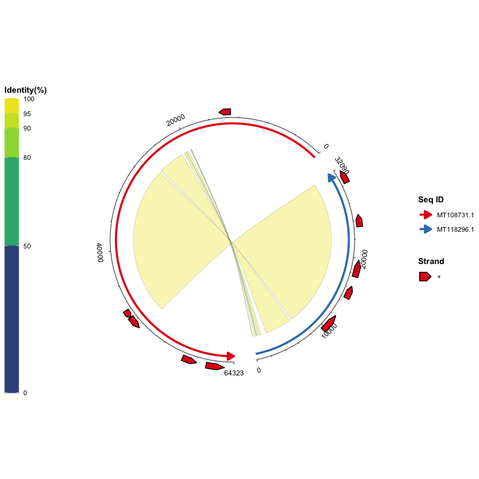
Step 6: Three-Sequence Comparison
The same idea works for three sequences — keep the sequences of interest and filter ribbon_data and gene_data accordingly:
seq3 <- seq_data_example[seq_data_example$seq_id %in%
c("MT108731.1", "MT118296.1", "OQ646790.1"), ]
ribbon3 <- ribbon_data_example[
ribbon_data_example$qaccver %in% seq3$seq_id &
ribbon_data_example$saccver %in% seq3$seq_id, ]
gene3 <- gene_data_example[gene_data_example$seq_id %in% seq3$seq_id, ]
ggchord(seq3, ribbon3, gene3) +
geom_seq() + geom_ribbon() + geom_gene() + geom_axis()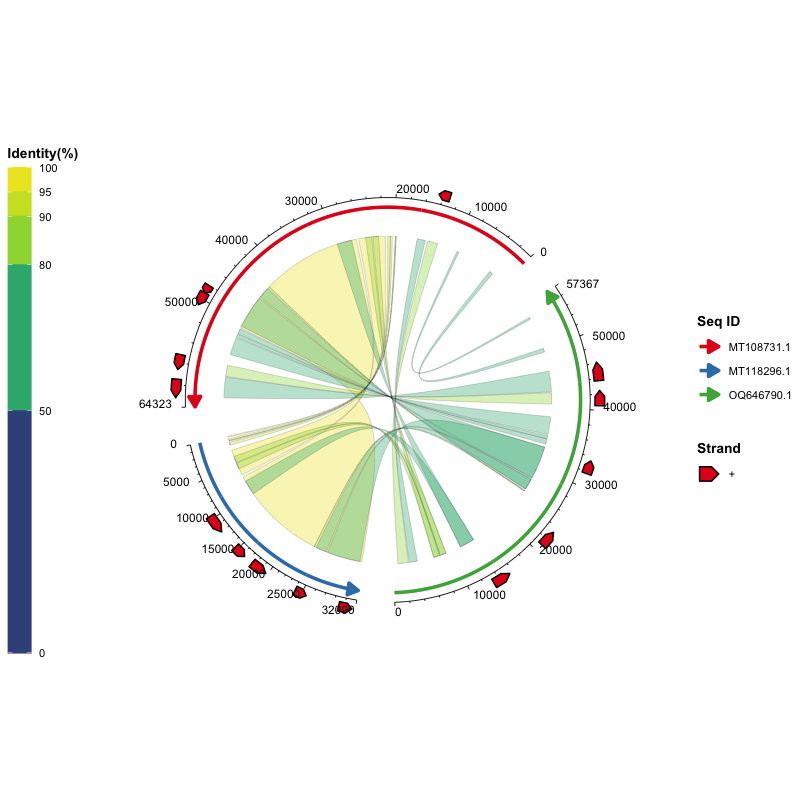
Step 7: Combine Everything and Fine-Tune
Combine all layers and distribute fine-grained parameters to the layer that uses them:
ggchord(
seq_data = seq_data_example,
ribbon_data = ribbon_data_example,
gene_data = gene_data_example,
title = "Multi-sequence Chord Diagram with Gene Annotations",
rotation = 45
) +
geom_seq(
seq_radius = c(3, 2, 2, 1),
seq_orientation = c(-1, -1, -1, 1),
seq_curvature = c(0, 1, -1, 1.5),
seq_gap = 0.03
) +
geom_ribbon(
ribbon_color_scheme = "pident",
ribbon_gap = 0.1
) +
geom_gene(
gene_offset = list(
c("+" = 0.2, "-" = -0.2),
c("+" = 0.2, "-" = -0.2),
c("+" = 0.2, "-" = 0),
c("+" = 0.2, "-" = 0.1)
),
gene_width = 0.08,
gene_label_show = TRUE,
gene_label_rotation = list(
c("+" = 45, "-" = -45),
c("+" = 30, "-" = -30),
c("+" = 15, "-" = -15),
c("+" = 0, "-" = 0)
)
) +
geom_axis(
axis_gap = 0,
axis_tick_major_length = 0.03,
axis_label_size = 2
)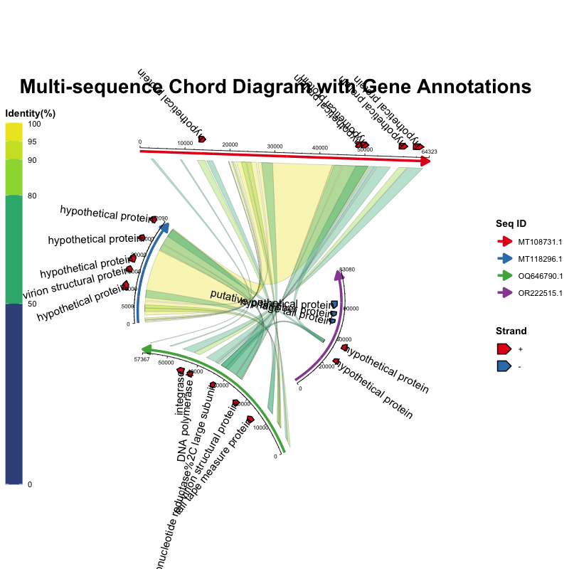
Step 8: Add Themes and Scales with +
Because a ggchord plot is a real ggplot2 object, themes and scales can be added with + just like in ggplot2:
ggchord(seq_data_example, ribbon_data_example, gene_data_example) +
geom_seq() + geom_ribbon() + geom_gene() + geom_axis() +
theme(
legend.position = "bottom",
legend.box = "horizontal",
panel.background = element_rect(fill = "grey95")
) +
scale_color_manual(
values = c("MT108731.1" = "#E41A1C",
"MT118296.1" = "#377EB8",
"OQ646790.1" = "#4DAF4A",
"OR222515.1" = "#984EA3")
)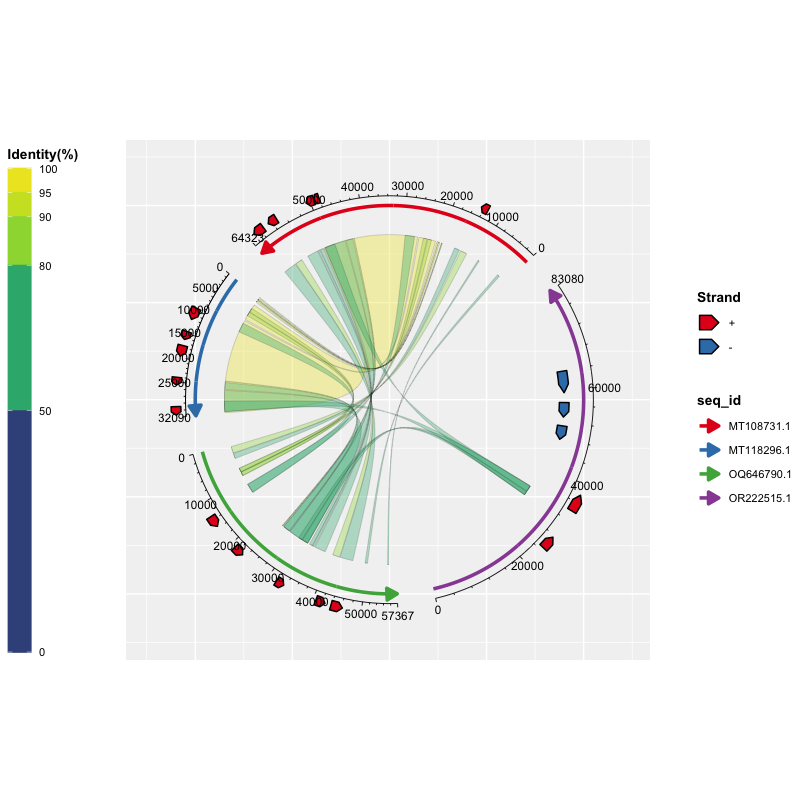
Each legend can also be placed independently with the legend_position argument of geom_seq(), geom_ribbon() and geom_gene() (the Seq ID legend, the Identity(%) colourbar, and the Strand/Gene Annotation legend). Legends without an explicit position stay together at theme(legend.position = ...):
ggchord(seq_data_example, ribbon_data_example, gene_data_example) +
geom_seq(legend_position = "left") +
geom_ribbon(legend_position = "bottom") +
geom_gene(legend_position = "right") +
geom_axis()Flexible parameter formats: all sequence-level parameters (seq_radius, seq_gap, etc.) accept a single value, an unnamed vector, a vector/list named by sequence ID, a list named by sequence order ("1", "2", …), or an unnamed list. Gene-level parameters (e.g. gene_label_rotation, gene_offset) additionally accept per-strand (+/-) specifications — as a named vector or inside lists:
gene_label_rotation = 20 # same for everything
gene_label_rotation = c("+" = -15, "-" = -45) # same for every sequence, per strand
gene_label_rotation = list("MT118296.1" = c("+" = -15, "-" = -45),
"MT108731.1" = c("+" = -15, "-" = -45)) # by sequence ID
gene_label_rotation = list("1" = c("+" = -15, "-" = -45),
"2" = c("+" = 30, "-" = -30),
"3" = c("+" = 15, "-" = -15),
"4" = c("+" = 0, "-" = 0)) # by sequence order
gene_label_rotation = list(c("+" = -15, "-" = -45),
c("+" = 30, "-" = -30),
c("+" = 15, "-" = -15),
c("+" = 0, "-" = 0)) # unnamed list by order
gene_label_rotation = list(20) # length-one list recyclesLayer Reference
| Layer | Function | Description |
|---|---|---|
| Sequence Arcs | geom_seq() |
Draws arcs (or lines) for each sequence, with directional arrows |
| Alignment Ribbons | geom_ribbon() |
Draws colored ribbons from alignment results |
| Gene Arrows | geom_gene() |
Draws gene annotation arrow polygons and labels |
| Axes | geom_axis() |
Draws axis lines, major/minor ticks, and tick labels |
| Sequence Labels | geom_seq_label() |
Places labels on or outside the sequence arcs |
Parameter Reference
ggchord() Parameters
| Parameter | Type | Default | Description |
|---|---|---|---|
seq_data |
data.frame | - | Sequence info; must include seq_id, length
|
ribbon_data |
data.frame | NULL | Alignment results (e.g., BLAST output) |
gene_data |
data.frame | NULL | Gene annotation data |
title |
character | NULL | Plot title |
rotation |
numeric | 45 | Global rotation angle (degrees) |
panel_margin |
numeric/list | 0 | Panel margins |
show_legend |
logical | TRUE | Display legend |
debug |
logical | FALSE | Output debug info |
geom_seq() Parameters
| Parameter | Type | Default | Description |
|---|---|---|---|
seq_order |
character vector | NULL | Drawing order of sequences |
seq_labels |
character vector | NULL | Sequence labels |
seq_orientation |
numeric (1/-1) | 1 | Sequence direction |
seq_gap |
numeric [0, 0.5) | 0.03 | Gap proportion between sequences |
seq_radius |
numeric (> 0) | 1.0 | Sequence arc radius |
seq_curvature |
numeric | 1.0 | Curvature: 0=straight, 1=standard, >1=more curved |
seq_colors |
color vector | Set1 | Sequence arc colors |
linewidth |
numeric | 1.2 | Arc line width |
show_legend |
logical | TRUE | Show legend |
legend_position |
character | NULL | Position of the Seq ID legend: “left”, “right”, “top”, “bottom” or “inside” (NULL = follow theme(legend.position = ...)) |
geom_seq_label() Parameters
| Parameter | Type | Default | Description |
|---|---|---|---|
seq_label_radius |
numeric/vector | 1.15 | Radial position of labels as a multiplier of the arc radius (1 = on the arc) |
seq_label_rotation |
numeric/vector | 0 | Additional label rotation (degrees) |
seq_label_size |
numeric/vector | 3 | Label font size |
seq_labels |
character vector | NULL | Override label texts (defaults to the sequence labels from geom_seq()) |
show_legend |
logical | FALSE | Show legend |
geom_ribbon() Parameters
| Parameter | Type | Default | Description |
|---|---|---|---|
ribbon_color_scheme |
character | “pident” | Scheme: "pident", "query", "subject", "single"
|
ribbon_colors |
color vector | auto | Ribbon color parameters |
ribbon_alpha |
numeric (0-1) | 0.35 | Ribbon transparency |
ribbon_ctrl_point |
vector/list | c(0,0) | Bézier control points |
ribbon_gap |
numeric/vector | 0.15 | Radial gap between sequences and ribbons |
alpha |
numeric | 0.35 | Transparency (overrides ribbon_alpha) |
ribbon_outline_color |
character | “black” | Ribbon outline (border) color |
ribbon_outline_width |
numeric | 0.05 | Ribbon outline line width |
ribbon_outline_linetype |
numeric/character | 1 | Ribbon outline line type (1 = solid) |
show_legend |
logical | TRUE | Show legend |
legend_position |
character | NULL | Position of the Identity(%) colourbar: “left”, “right”, “top”, “bottom” or “inside” (NULL = follow theme(legend.position = ...)) |
geom_gene() Parameters
| Parameter | Type | Default | Description |
|---|---|---|---|
gene_offset |
numeric/vector/list | 0.1 | Radial offset of gene arrows |
gene_width |
numeric/vector/list | 0.05 | Gene arrow width |
gene_color_scheme |
character | “strand” | Scheme: "strand" or "manual"
|
gene_colors |
color vector | auto | Gene arrow fill colors |
gene_order |
character vector | NULL | Gene display order in legend |
gene_label_show |
logical | FALSE | Display gene labels |
gene_label_size |
numeric | 2.5 | Label font size |
gene_label_rotation |
numeric/vector/list | 0 | Label rotation angle |
gene_label_radial_offset |
numeric/vector/list | 0 | Radial offset of labels |
gene_label_circum_offset |
numeric/vector/list | 0 | Circumferential offset |
gene_label_circum_limit |
logical/vector/list | TRUE | Limit circumferential offset |
show_legend |
logical | TRUE | Show legend |
legend_position |
character | NULL | Position of the Strand/Gene Annotation legend: “left”, “right”, “top”, “bottom” or “inside” (NULL = follow theme(legend.position = ...)) |
show_label |
logical | NULL | Override gene_label_show |
label_size |
numeric | NULL | Override gene_label_size |
geom_axis() Parameters
| Parameter | Type | Default | Description |
|---|---|---|---|
show_axis |
logical | TRUE | Display axes |
axis_gap |
numeric/vector | 0.04 | Radial gap to sequences |
axis_tick_major_number |
integer/vector | 5 | Number of major ticks |
axis_tick_major_length |
numeric/vector | 0.02 | Major tick length proportion |
axis_tick_minor_number |
integer/vector | 4 | Number of minor ticks |
axis_tick_minor_length |
numeric/vector | 0.01 | Minor tick length proportion |
axis_label_size |
numeric/vector | 3 | Tick label font size |
axis_label_offset |
numeric/vector | 1.5 | Label offset proportion |
axis_label_orientation |
character/numeric/vector | “horizontal” | Label orientation |
show_legend |
logical | FALSE | Show legend |
Plot Interpretation
- Sequence Arcs: Each colored arc represents a sequence, proportionally mapped by length, with arrows indicating direction.
- Ribbons: Colored regions connecting different sequences represent alignment intervals.
- Gene Arrows: Arrow polygons annotated on sequences, colored by strand or functional category, with optional labels.
- Axes: Ticks and numbers outside each sequence arc, labeling sequence positions.
Version History
v0.6.0 (Latest)
-
Self-contained plot objects: data and parameters are stored on the plot itself, so multiple plots can coexist and plots survive
saveRDS()/readRDS(). -
Build-time layout: the layout is now computed by
ggplot_build()instead ofprint(), soprint(),ggsave(),ggplot_build()(andggplotly()) all work; the user’s plot object is no longer modified when rendering. -
New layer
geom_seq_label(): place sequence labels on/outside the arcs (seq_label_radius,seq_label_rotation,seq_label_size). -
New ribbon color scheme
"subject": color ribbons by the subject sequence. -
Exported
get_chord_layout(): access the computed layout for custom layers. -
Themes/scales via
+:theme()and user-supplied scales are respected. -
Data validation:
ggchord()now warns about out-of-range or reversed alignment/gene coordinates and unknown sequence IDs. - Performance: faster angle lookup in the layout mapping (binary search instead of a linear scan).
-
Dependencies: declares
ggplot2 (>= 4.0.0)andR (>= 4.1.0)to match the implementation. -
CI: GitHub Actions
R CMD checkworkflow on macOS, Windows and Linux.
v0.5.0
-
Ribbon outline customization:
geom_ribbon()gainsribbon_outline_color(default"black"),ribbon_outline_width(default0.05) andribbon_outline_linetype(default1, solid). -
Dependencies removed: dropped
ggnewscale(ribbon/gene fill scales are now separated internally) andRColorBrewer(Set1 palette built in). -
Bug fixes: ribbon fill scale overwritten by the gene fill scale;
ribbon_alpharendered at the wrong opacity;geom_axis(show_axis = FALSE)error; mixedaxis_label_orientationvectors;brewer.pal()warnings for <3 items;geom_gene()added beforegeom_ribbon(); axis-only plots; S3 method registration. - Documentation: comments/messages in English; new man pages; data-preparation tables with example rows; rendered example plots; BLAST de-emphasized; vignette rewritten for the layered API.
v0.4.0
-
Parameter Redistribution: Layout parameters moved from
ggchord()to individualgeom_*layers.ggchord()now only handles data validation and global style (title,rotation,panel_margin,show_legend,debug). -
Deferred Computation: Coordinate layout computed at
print()time. Parameters from allgeoms are collected and applied during rendering. -
Custom
print.ggchord()Method: Merge parameters → compute layout → inject data into layers → render. - 15 unit tests added.
v0.3.0
- Layered API refactoring: split from monolithic function to
ggchord() + geom_seq() + geom_ribbon() + geom_gene() + geom_axis(). - Custom
+.ggchordmethod for automatic list flattening. - Lightweight
coord_chord()coordinate system.
v0.2.0
- Enhanced arc and line mode optimization.
- Precise curvature and gap control.
- Enhanced color customization.
Contributions & Feedback
Bug reports and feature requests are welcome via GitHub issues. Pull requests are also appreciated.
License
This project is licensed under the MIT License — see the LICENSE file for details.